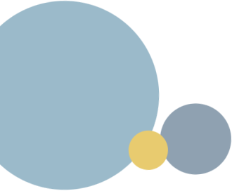
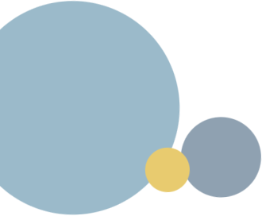

Its long tunnel-like streets are dotted with buildings of incredible geometric shapes. The buildings are divided into sectors by mathematically accurate contours. Skirting them, electromagnetic roads stretch into the distance of miles in a form of wide strips. The roads catch up and split up with a monorail string stretched along the sky.
There are no trees and green lawns in the parks. You can't hear the chirping of birds and the splash of water on smooth granite stone. Instead, the huge cylindrical skeletons spread their flexible crowns, flashing the daylight of the ProtoStar through the lattice bodies. On their thin, metal rods, drones buzzing with their blades find refuge, pouring clots of waste oil onto the shoulders of gaping passers-by. The hinge fingers shake them off awkwardly, hurrying until the pungent ooze has eaten into the metal body.
All of them are so different and so similar at the same time. Angular, smooth, tall, low, with protruding bundles of wires from the carbon skull. Scanning at a glance, wise with their life experience, and very young, at the same time, looking at the world with their diode wide-open eyes.
Their lives were never following the laws of the robotics world. No one assigned tasks to them and did not set goals. The only thing that could restart them was a short circuit which gave a rise of a spark inside that triggered a mechanical heart. The large, open world itself gave them the opportunity to find the script they needed for the circulation of electronic data, enlivening the selected cell to reach the goal.

 
